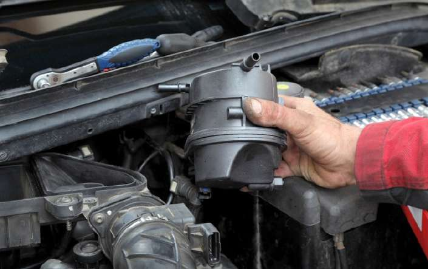
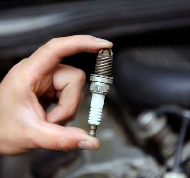

INFORMACIÓN COVID
| DISTANCIA >2M DE SEGURIDAD | DESINFECCIÓN DE PUNTOS BÁSICOS DEL VEHÍCULO | NUESTROS TÉCNICOS PROTEGIDOS | MAMPARAS DE PROTECCIÓN EN ATENCIÓN AL CLIENTE |
Cuidamos de tu vehículo y de tí. Consulta nuestro protocolo de seguridad COVID-19
INFORMACIÓN COVID
| DISTANCIA >2M DE SEGURIDAD | DESINFECCIÓN DE PUNTOS BÁSICOS DEL VEHÍCULO | NUESTROS TÉCNICOS PROTEGIDOS | MAMPARAS DE PROTECCIÓN EN ATENCIÓN AL CLIENTE |
Cuidamos de tu vehículo y de tí. Consulta nuestro protocolo de seguridad COVID-19

Rápidamente, el concepto Record Autoak de reparación rápida sin cita previa se convierte en un atractivo para los clientes y dos años después ya contamos con varios centros en Euskadi.
En la actualidad, continúamos liderando el Mantenimiento Integral del Automóvil en Bilbao, también estamos presentes en las 3 provincias de Euskadi y planteamos expandirnos a toda España, contando con los mejores ingenieros y
dando el mejor servicio.
Rekord Autoak comenzó con los tubos de escape. Este es el producto que nos hizo ser conocidos en el mundo de la postventa. Sin embargo, hoy RKA es mucho más que eso: diagnóstico electrónico, mantenimiento integral, neumáticos,
revisión oficial, baterías, sistema de frenos, climatización, correa de distribución, embragues, operaciones de mecánica general, servicio para Motos, coche conectado a través de RKA Connect y un abanico de productos y servicios pensados
siempre para cumplir con nuestra misión: "CUIDAR DE CADA CONDUCTOR DE FORMA SOSTENIBLE"
Con un compromiso claro, una amplia y variada oferta de servicios, un conocimiento técnico que avanza a diario y el deseo de cuidar todos los días a cada uno de sus clientes, RKA continúa incrementando su presencia en todo el
país.
Artículos a tener en cuenta
|  |
¿Cada cuánto hay que hacer un cambio de filtro? 10 OCTUBRE, 2020 |
La importancia de la bomba de combustible 05 SEPTIEMBRE, 2020 |
|
|  |
¿Cómo se limpian las bujías del coche? 15 AGOSTO, 2020 |
Neumático pinchado o desinflado. Como conocer el estado de tus ruedas. 01 JULIO, 2020 |